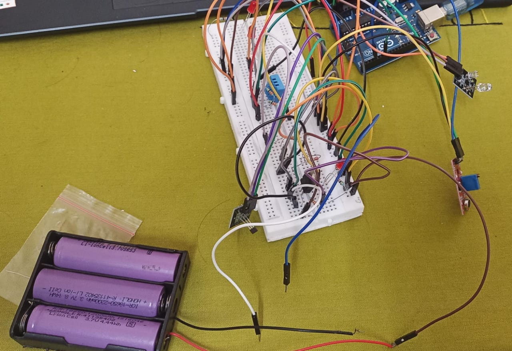
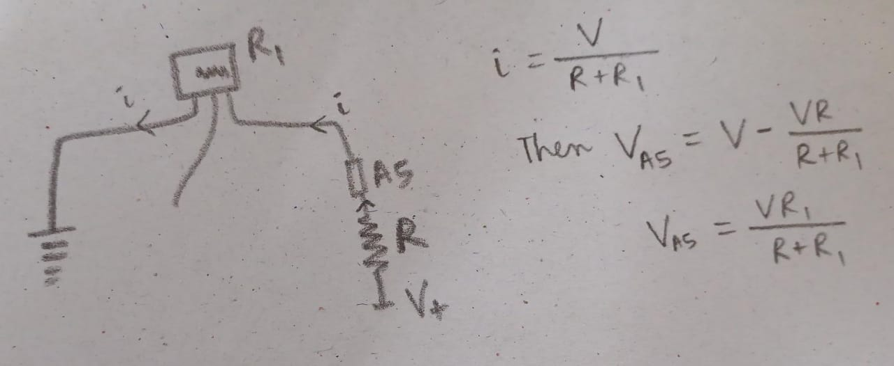

Aware Bot
Aware Bot
Awarebot Github
The Rough idea: A machine or box or bot that can be placed in varied environments, where it will collect data.
These will be further processed and fed back to the bot so that it can take some decisions on its own
Topics I have realised I need to cover, so far:
Signal processing
Multiple communication
Power Source
25 January, 2025
There are small little nuances that can act as big roadblocks. Like I realised today, that connecting the battery power supply to the Arduino in opposite polarity won't work.
I had spent a lot of time in setting up the LM317 linear voltage regulator circuit. I have a power supply of 11.1 V and I wanted to step it down to 5 V to power the board as well as the sensors. From the formula Vo = Vref(1+ r2/r1), r1 = 330 and r2 = 990 for 5V. but with this configuration the power led of the board was barely on, so adding a 330 resistor in series and increasing r2 to 1330 increased the Vo to the board but this also increases the voltage difference to the sensors.
I realised that signal from even ordinary sensors could be filtered and cleaned and insights could be obtained, from this Arduino Project : Link
27 January, 2025
An observation:

The circuit
The linear hall magnetic sensor sets the output voltage to Vs/2 for 0 Gauss magnetic field and the output varies linearly. (from datasheet of 49E)
The supply voltage to the sensors was 6.29 V and the output of the hall magnetic sensor is set by this voltage. But the operating voltage of the arduino is 5V so it maps the voltage in 0 - 1023 based on this scale.
For every 4.9 mV, the analogRead increases by 1.
Mode ( most frequent value) = 409. This means 409x5/1023 = 2V was measured. This is less than half of 6.29 V, meaning some magnetic field is present. Which might be noise
At 6.29 V, sensitivity per volt is around 0.27 mV/G/ volt.

So, 0.27 x 6.29 = 1.7mV/G

From the graph it is 1.5mV/G.
6.29/2 = 3.145 V.
3.145-2 = 1.145 V = 1145 mV
1145/ 1.7 G = 673.5 G
Cleared the sound analog reading by discarding all values less than mean.
The data is skewed so z-score, or quartile is not very useful.
Moving average filter to smoothen out the curve. Don't know if it is needed.
29 January, 2025
Observation and calculations:
Lesser the light on the photo resistor??, more is the resistance.
In case of no external V+,
No much difference from the value of around 380, whether light is off or led is blocked by black cloth
Sensitivity is low
Connection of the v+ makes the reading stable and decreases the noise.
When A5 analog Input is configured as input pullup, the reading of the pin is given by VR1/ (R + R1)

Thus the reading increases as R1 increases.
The more light falling on the device, the value decreases, indicating a decrease in resistance.
Thus the light receiver may be a photodiode.
Calibrating the KY-039 (Photodiode and LED)
Under 5V operation
Under 3.7V external
Reading decreases as light intensity increases, or when the diode is covered.